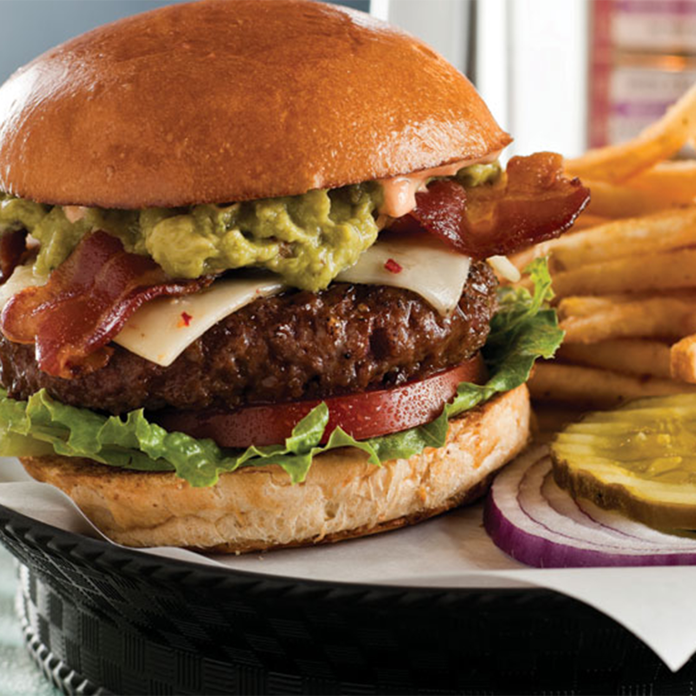

Guacamole Burger
A delectable cheesburger with a Southwestern kick. Topped with handmade guacamole and seasoned with traditional Tex-Mex spices. A truly unique burger with tons of flavor.
Prep Time: |
30 Minutes |
Cook Time: |
10 Minutes |
Serves: |
6 People |
Ingredients
- 2 Avocados- halved,peeled, and pitted
- 1/2 Lime
- 1/2 cup diced tomatoes
- 1/4 cup minced onion
- 2 pounds ground beef
- 1 tablespoon minced garlic
- 1 teaspoon chili powder
- 6 slices Monterey Jack cheese
- 6 hamburger buns
Directions
- Preheat grill to medium heat
- To make the guacamole, mash the avocado in a medium bowl with the juice of half a lime, tomatoes, 1/4 cup onion, and 1 1/2 teaspoons of minced garlic; season to taste with salt, and set aside.
- In a large bowl, mix together beef, the juice of half a lime, 1 tablespoon garlic, chili powder, 1/2 cup diced onion, and cilantro. Form the meat into 6 patties.
- Cook the burgers to desired doneness on the preheated grill. Add a slice of cheese to each burger during the last minute of cooking. Serve on toasted buns with a dollop of guacamole.
Chris P. Bacon
Absolutely delicious. I would recommend this to everyone. I love Southwestern food and the guac recipe is perfect.
George Foreman
Definitely a burger I would grill on my foreman. I changed around a few spices to taste but it was overall pretty great.